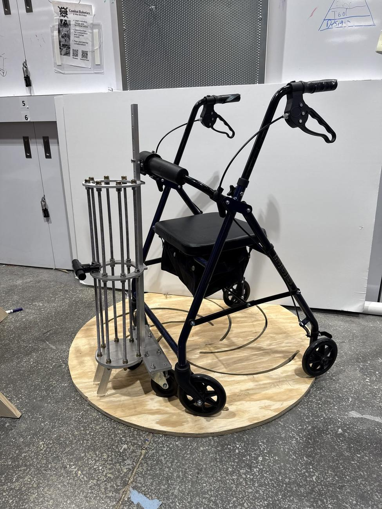

Rollator Oxygen-Canister Mount
At Duke Hospital, walking a patient on oxygen took a second staff member just to manage the canister. Our team designed and prototyped a wheeled cage that mounts the canister to the rollator itself, freeing that second person. We validated it against seven design criteria, reduced the tipping angle by 6°, and earned a 4.3 out of 5 usability rating from 30 evaluators, then presented it at the Duke Foundry showcase.
The final prototype: a wheeled cage that holds the oxygen canister and attaches to a standard hospital rollator, shown on the test turntable.
Rollator Oxygen-Canister Mount
A medical device project (Aug 2024 to May 2025) that secures oxygen canisters to Duke Hospital rollators. It earned a 4.3/5 usability rating from 30 evaluators and was shown at the Duke Foundry showcase.